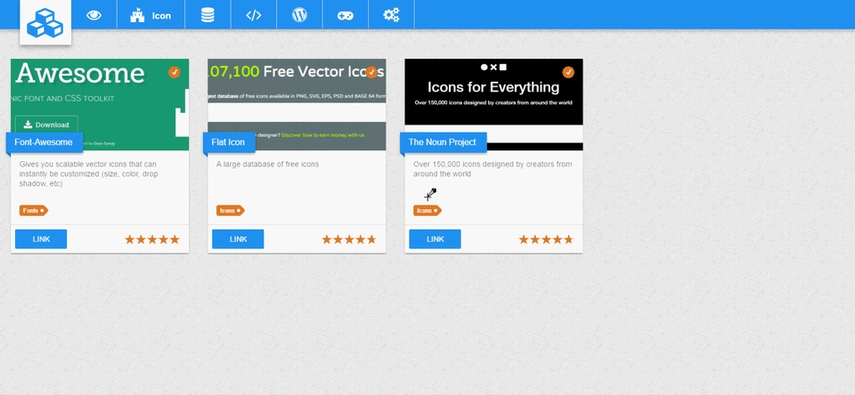
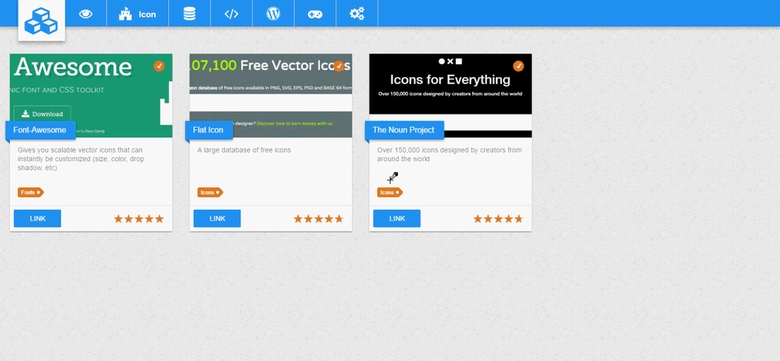

Passionné depuis plus de 7 ans, je parcours sans cesse les différents horizons que m’offre l’informatique tels que le mobile, les jeux vidéo ou encore le web.
Lorsqu’une idée d’application me vient en tête, je n’hésite jamais à la réaliser sur mon temps libre en me confrontant à une nouvelle technologie en vogue.
J’ai dans ma carrière, eu la chance de pouvoir assister à des conférences telles que Devoxx France ou Codeurs En Seine. Je me tiens également à jour en visionnant de moi-même des conférences en ligne ou en participant à des événements les soirs de semaine.
Je suis actuellement Développeur Full-Stack orienté Web avec un fort attrait pour les technologies Front-end. Je suis parfaitement capable de travailler en équipe dans un environnement agile et être force de proposition.
FORMATION & ÉXPERIENCES
-
VIDALseptembre 2017 – aujourd’hui
Développeur Web Full-Stack -
École d'Ingénieur Sup'Galiléeseptembre 2014 – septembre 2017
Diplôme d'ingénieur Informatique & Réseaux en apprentissage -
Foncia Groupeseptembre 2014 – aujourd’hui
Développeur Web Java -
Foncia Groupeseptembre 2013 – août 2014
Développeur Web Php -
Iut Villetaneuseseptembre 2012 – août 2014
DUT Informatique en apprentissage -
Foncia Groupeseptembre 2012 - août 2013
Administrateur Système
COMPÉTENCES
- Java
- Symfony2
- AngularJs
- HTML/CSS
- Jasmine
- Cucumber
- Angular
- SQL
- Mockito
- MongoDb
- ElasticSearch
- Wordpress
- Unity
- JUnit
- Git
RÉALISATIONS
Poc d'un jeu incrémental réalisé avec Game Maker Studio 2.
2020
Jeu de reflexion pour Android réalisé avec Unity.
Voir Page
2016 - 2017
Site web réalisé "from scratch" qui liste l'ensemble des technologies que j'utilise.
Voir Page
2016
Site vitrine réalisé avec Wordpress pour un domaine possédant des gîtes et des chambres d'hôtes
2014 - 2020
Jeu réalisé en Java graphique dans le cadre de ma formation d'ingénieur Informatique & Réseaux.
Voir Sources
2015
Jeu réalisé en Python orienté objet avec la librairie graphique Pygame par envie personnel.
Voir Sources
2013
Un autre jeu réalisé en Python orienté objet avec la librairie graphique Pygame par envie personnel.
Voir Sources
2013
J'éprouve une passion pour la musique et je pratique occasionnellement de la guitare ou de la guitare-basse.
Voir Page
2010 - Ajourd'hui


 
